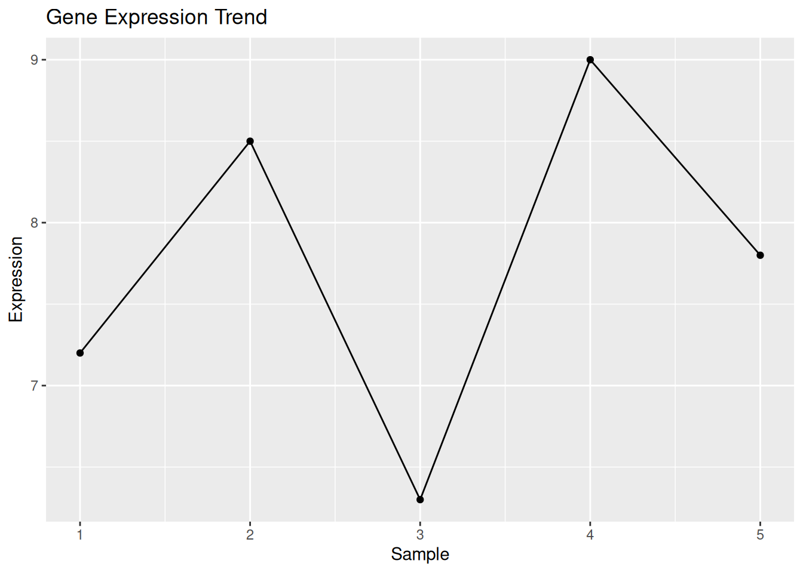
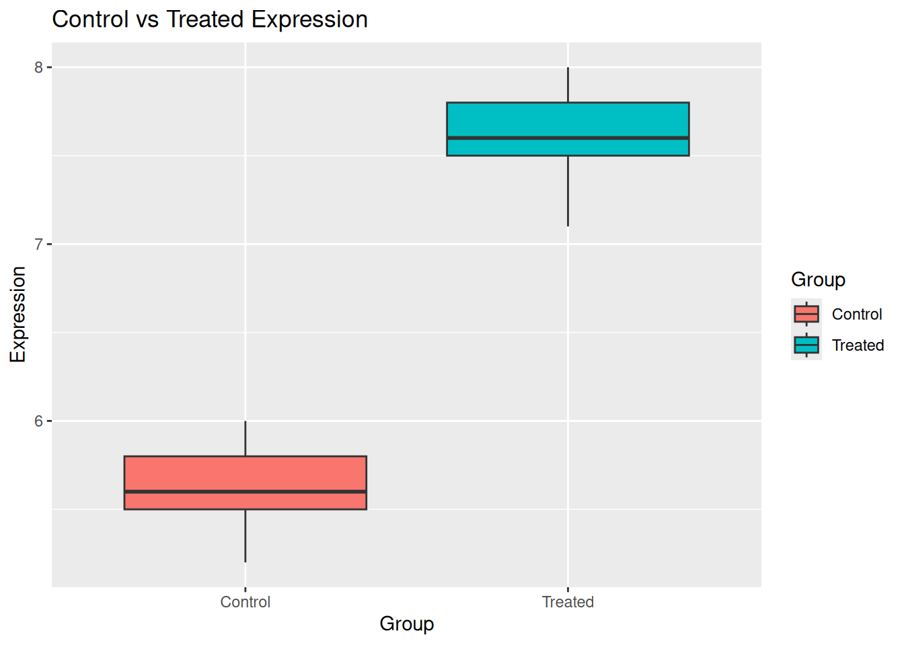

4 R Programming for Bioinformatics
4.1 Why R?
First of all, R is an open source and widely used programming language. Specifically, R is a powerful language for:
- Statistical analysis
- Data visualization
- Bioinformatics workflows
4.2 RStudio Environment
This section is just for understanding the installation and purpose: * Download R from CRAN: https://cran.r-project.org/ * Download RStudio from: https://posit.co/download/rstudio-desktop/
Key panels:
- Console: Main command interface
- Script: For writing and saving code
- Environment: Shows loaded objects
- Plots: For viewing generated visualizations
Figure Placeholder: RStudio interface
4.3 Basic Syntax
# Assigning variables
GeneExpression <- 5.6
Species <- "Homo sapiens"
# Numeric vector
x <- c(1,2,3,4,5)
# Basic operations
mean(x)## [1] 3## [1] 15## [1] 54.4 Working with Biological Data
# Gene expression values
GeneExpressions <- c(7.2, 8.5, 6.3, 9.0, 7.8)
# Summary statistics
mean(GeneExpressions)## [1] 7.76## [1] 7.8## [1] 1.0644254.5 Data Structures in R
4.7 Data Manipulation
## [1] "TP53" "BRCA1" "EGFR"## [1] 7.2 8.5 6.3## Gene Expression
## 1 TP53 7.2
## 2 BRCA1 8.5## Gene Expression HighExpression
## 1 TP53 7.2 TRUE
## 2 BRCA1 8.5 TRUE
## 3 EGFR 6.3 FALSE4.10 Basic Statistics
##
## One Sample t-test
##
## data: GeneExpressions
## t = 16.302, df = 4, p-value = 8.287e-05
## alternative hypothesis: true mean is not equal to 0
## 95 percent confidence interval:
## 6.438342 9.081658
## sample estimates:
## mean of x
## 7.76## [1] 14.11 Visualization
library(ggplot2)
df_plot <- data.frame(
Sample=1:5,
Expression=GeneExpressions
)
ggplot(df_plot, aes(x=Sample, y=Expression)) +
geom_line() +
geom_point() +
ggtitle("Gene Expression Trend")
4.13 Biological Example: Comparing Gene Expression
control <- c(5.2, 5.5, 5.8, 6.0, 5.6)
treated <- c(7.1, 7.5, 7.8, 8.0, 7.6)
# Combine into data frame
exp_data <- data.frame(
Expression=c(control, treated),
Group=rep(c("Control","Treated"), each=5)
)
# Statistical comparison
t.test(Expression ~ Group, data=exp_data)##
## Welch Two Sample t-test
##
## data: Expression by Group
## t = -9.7312, df = 7.9024, p-value = 1.132e-05
## alternative hypothesis: true difference in means between group Control and group Treated is not equal to 0
## 95 percent confidence interval:
## -2.450213 -1.509787
## sample estimates:
## mean in group Control mean in group Treated
## 5.62 7.604.14 Visualization of Comparison
ggplot(exp_data, aes(x=Group, y=Expression, fill=Group)) +
geom_boxplot() +
ggtitle("Control vs Treated Expression")